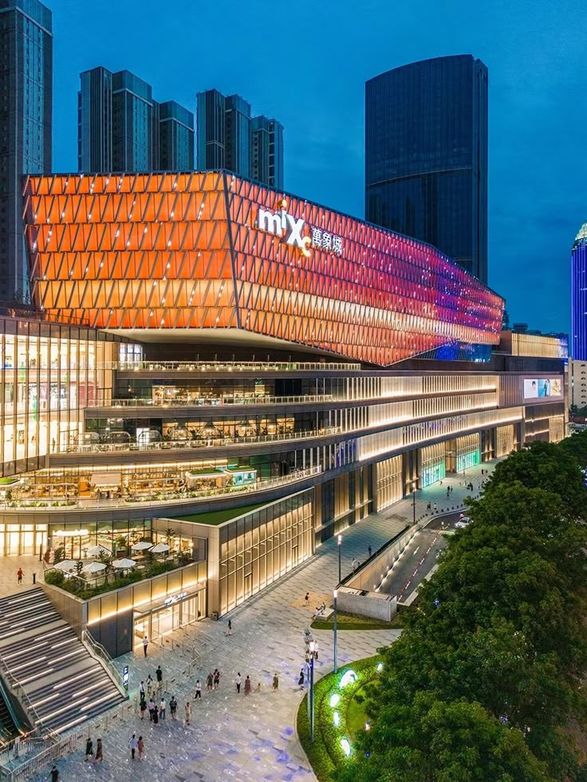
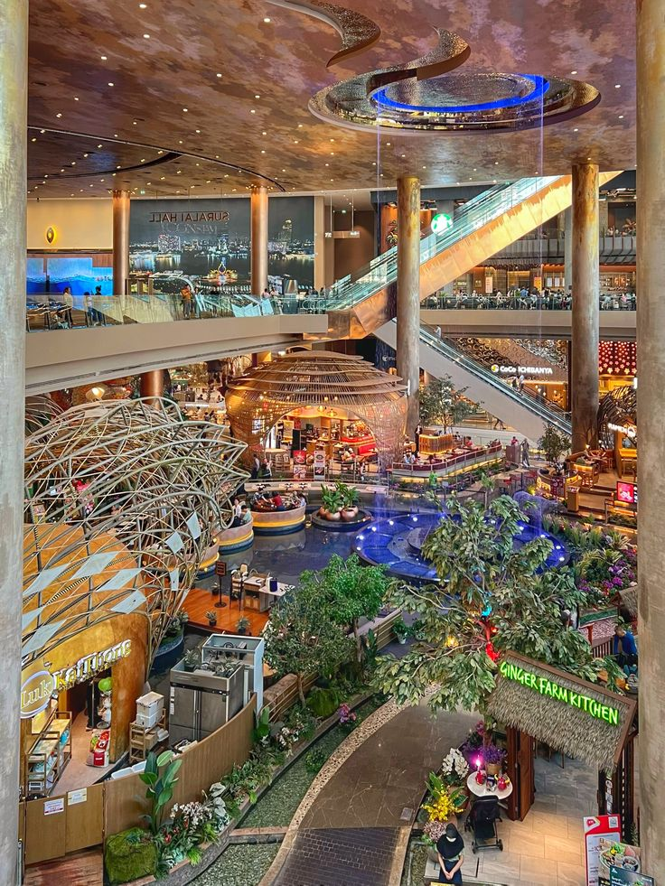
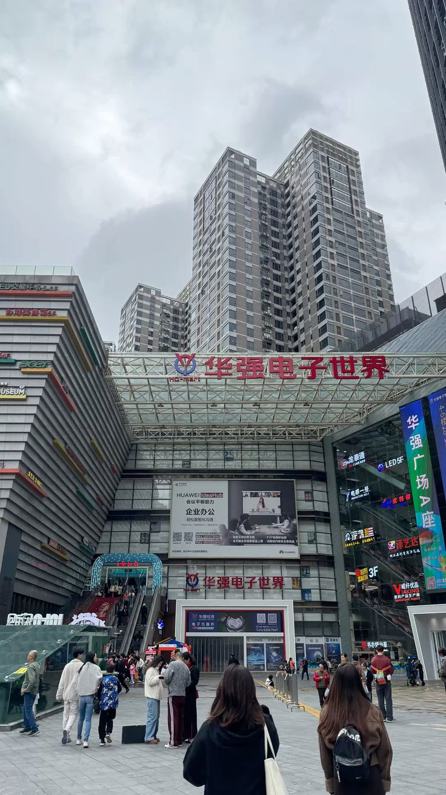
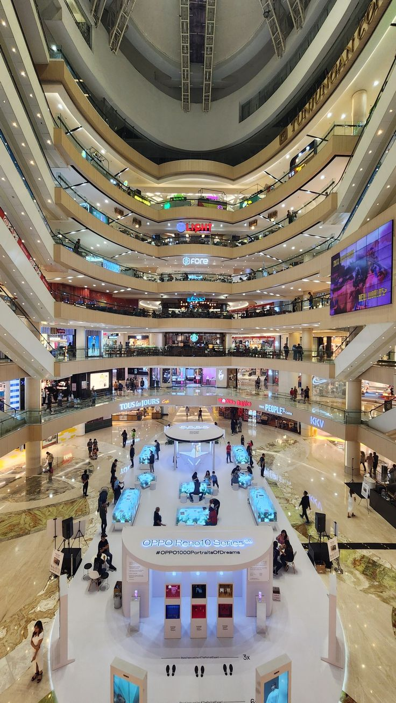

Jolly Connect is a multi-national phone accessory brand owned by Nigerian Bussinessman and entrepreneur
Joel Chidiebere Nwachukwu, popularly called Jolly boy. He founded the brand in the year 2024, after
spending a semester in school.
As well as being a business man, Jolly boy is also a student of Enugu State University of Science and Technology
ESUT Agbani. He is curently studying Architecture at the university, though stil in year one, Jolly boy disclosed in a meeting
with his friend Chisom that he opted for the programme becuse he had long imagined being an Architect. So to
him, studying Architecture was not a mistake.
Jolly Connect is a brand designed to operate in many nations of the world having it's early roots from ESUT Agbani.
Today, it operates in Asia, Australlia, Africa, Europe, North America, South America and evn has users in Antartica.
Jolly connect grew up from a little brand to a very great brand.
Here is a list of Jolly Connct headquarters in China




These and many more are the list of his Chinese companies.